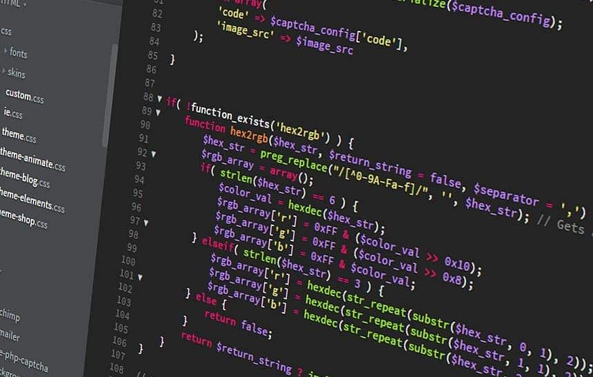

Dentro da área de tecnologia, uma das profissões que mais cresce é a de programador. Afinal, eles são fundamentais para o desenvolvimento das empresas do século XXI, onde vivemos grandes transformações digitais e acompanhar a tecnologia é primordial para empreender com sucesso.
desenvolvedor é o responsável por organizar códigos e linguagens de programação dentro da tecnologia da informação. Isto é, uma série de automatizações que chamamos de programas ou sistemas de computador (software), facilitando as operações humanas na atualidade.
são profissionais em constante aprendizado, trazendo atualizações e novas maneiras de melhorar os processos da vida pessoal e profissional.
serem tão importantes para a sociedade, os programadores têm um dia especial marcado no calendário. Conheça a história do Dia do Programador e um pouco mais sobre esta profissão.
º dia do ano: Dia do Programador Nada é uma coincidência ou subjetividade. Assim como a ciência da computação, o Dia do Programador tem significado exato e explicamos por quê:
Se contarmos os dias no calendário, o 256º dia do ano cai no dia 13 de setembro (ou 12 de setembro em anos bissextos);
256 é o número de valores distintos que podem ser representados com um byte de oito bits, por isso, é um número muito conhecido entre os programadores;
Em hexadecimal, 256 é igual à ‘100’ → ‘0 x 100’;
4. 256 é o resultado da oitava potência do número dois, a maior potência de dois abaixo de 365, o número total de dias em um ano não bissexto.
Mas quais são as funções de um programador? Como já comentamos no início do texto, o programador é um profissional que utiliza uma série de linguagens de programação para criar comandos para programas. Assim, pode desenvolver softwares, aplicativos, sites, banco de dados e muitas outras aplicações relacionadas ao digital.
Dessa forma, toda a área de programação reflete grandes mudanças nas relações de trabalho do setor tecnológico e influencia o perfil deste profissional da indústria 4.0. Conheça um pouco mais sobre o que faz este especialista em high-tech:
• Front-end (client side): abrange a parte da programação que tem contato direto com o usuário, como a página de um site.
• Back-end: trabalha nos bastidores da aplicação, ditando como o programa deve funcionar. Os desenvolvedores que atuam nas duas frentes são chamados de fullstack.
O primeiro algoritmo da história Apesar de ser uma área muito popular, nem sempre foi assim. Inclusive, a programação é muito recente na história de profissões do mundo. Dito isto, é importante ressaltar que antes do primeiro programador, veio o primeiro algoritmo, que foi escrito Ada Lovelace, considerada a mãe da tecnologia.
A Condessa desenvolveu um código para realizar cálculos, posteriormente, esse código se tornou o que chamamos de primeiro computador do mundo, a máquina de Charles Babbage. Depois, em 1843, surge o primeiro profissional da programação.
Veja como o pioneirismo das mulheres transforma a tecnologia
Esses profissionais se tornaram protagonistas na evolução do universo digital, acompanhando a evolução da tecnologia. Afinal, foi graças a programação que temos a internet do jeito que conhecemos hoje: e-mail, Google, redes sociais, armazenamento em nuvem etc.
O que as empresas esperam de um desenvolvedor? Iniciativa, independência e perseverança para aprender e resolver problemas de maneira autodidata. Essas características, além das habilidades técnicas, também são valorizadas pelas corporações na hora de escolher novos colaboradores.
Além disso, os profissionais de tecnologia não precisam ficar restritos à área. É possível aproveitar para explorar outros conhecimentos que possam contribuir
Linguagens de programação mais comuns no mercado Embora exista uma grande variedade de linguagens de programação, certamente algumas poderão ser mais adequadas a atender determinados projetos. Por isso, é muito importante que esse assunto seja amplamente discutido e analisado. Assim saberemos os melhores caminhos para o início do trabalho.
As mais utilizadas são:
1. JavaScript JavaScript é uma linguagem de programação que foi originalmente implementada e direcionada ao desenvolvimento web, com foco em navegadores. Seu objetivo é fazer com que os scripts sejam executados e interajam com o usuário sem passar pelo servidor.
2. Java
Java foi criada para orientação de objetos, mas hoje é a principal linguagem utilizada no desenvolvimento de aplicativos para tablets e smartphones Android. Também é muito utilizada em ambientes corporativos.
3. Python
Python é uma linguagem de programação livre e de código aberto, considerada de alto nível. É direcionada à objetos e utilizada por grandes sites como o Google, Youtube e Netflix.4. PHP
O PHP é uma linguagem open source muito utilizada atualmente, pois as páginas da web construídas com PHP contêm HTML em código mesclado que executa as ações. Excelentes exemplos de aplicações open source que utilizam a linguagem de programação PHP, temos os CMS’s WordPress, Joomla, Drupal, entre outros.5. CSS
CSS, sigla para Cascading Style Sheets, significa Folha de Estilo em Cascatas. Ele é mais utilizado com as linguagens de marcação HTML e XHTML, além de ser um mecanismo para adicionar estilo às páginas da web. Mas, no lugar de formatar dentro do próprio documento, o CSS cria um link que direciona a outro arquivo. Este arquivo contém todos os estilos utilizados.6. Ruby
Ruby é uma linguagem de programação com gerenciamento de memória automático, que teve origem no Japão, em 1995.Apesar disso, é importante salientar que não existe a linguagem de programação certa ou a melhor. Existem diferentes linguagens para cada realidade.
Para finalizar, deixamos aqui nossos sinceros parabéns aos Programadores. Vocês fazem a diferença no mundo!